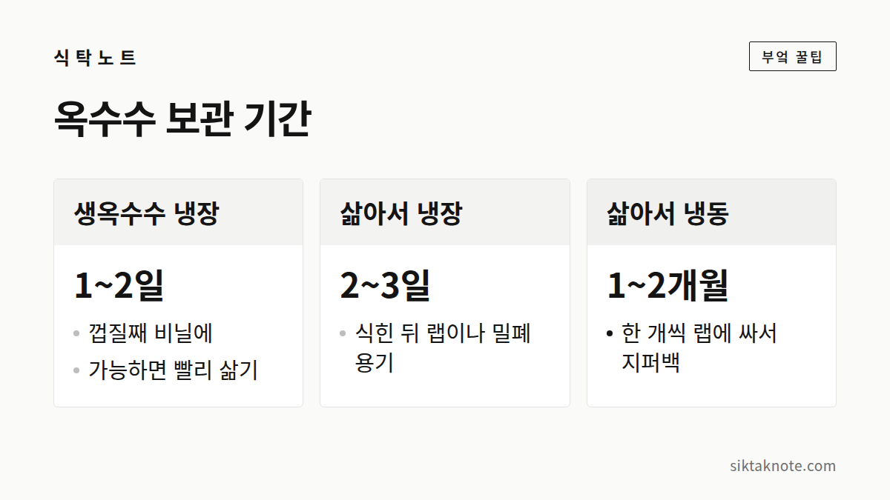

옥수수 삶는 법과 보관법 — 단맛 지키는 요령

3줄 요약
- 옥수수는 사 온 날 바로 삶는 게 제일 맛있어요. 속껍질을 한두 겹 남기고 삶으면 향이 더 좋아요.
- 삶은 옥수수는 식힌 뒤 한 개씩 랩에 싸서 냉동하면 한두 달은 거뜬해요.
- 먹을 때는 해동한 다음 찜기나 전자레인지로 데워 주세요.

옥수수는 사 온 날 삶는 게 제일이에요
옥수수는 수확하는 순간부터 알갱이 속 당분이 전분으로 바뀌기 시작해요. 시간이 갈수록 단맛은 줄고 알갱이는 퍼석해진다는 뜻이죠. 그래서 사 온 날이나 다음 날까지는 삶아 두는 게 가장 좋아요. 강원도 옥수수가 7~8월에 유독 맛있는 것도, 갓 따서 바로 삶아 먹는 맛 덕분이에요.

단맛을 가두는 삶기
- 옥수수 겉껍질을 벗기고 속껍질은 한두 겹 남겨 두세요. 속껍질이 알갱이를 감싸 줘서 향과 단맛이 덜 빠져요.
- 냄비에 옥수수가 잠기도록 물을 붓고 소금을 한 꼬집 넣어요.
- 물이 끓기 시작하면 약불로 줄여서 30분 안팎 삶아요. 찰옥수수는 이 정도면 쫀득하고, 알이 큰 옥수수는 조금 더 걸릴 수 있어요.
- 불을 끄고 몇 분 뜸을 들인 뒤 꺼내면 알갱이가 더 촉촉해요.

먹고 남은 옥수수는 이렇게
삶은 옥수수는 완전히 식힌 뒤 랩이나 밀폐 용기에 담아 냉장하고, 2~3일 안에 먹어요. 더 오래 두고 싶다면 한 개씩 랩으로 단단히 싸고 지퍼백에 담아 냉동하면 한두 달은 괜찮아요. 알갱이만 칼로 발라서 지퍼백에 납작하게 얼려 두는 방법도 있는데, 이렇게 해 두면 볶음밥이나 샐러드, 수프에 넣기 편해요.
얼린 옥수수 촉촉하게 데우기
냉장고에서 반나절 정도 해동하거나 실온에 두었다가, 찜기에 5~10분 쪄 주세요. 급할 때는 랩을 씌워 전자레인지에 2~3분 돌려도 돼요. 그래도 찜기에 데운 쪽이 훨씬 촉촉해요.
상한 옥수수는 아쉬워도 보내 주기
삶은 옥수수를 실온에 오래 두면 쉽게 상해요. 시큼한 냄새가 나거나 알갱이 표면이 끈적거리면 아깝더라도 버리세요.
바로 삶고, 남은 건 얼려 두면 옥수수 철이 지나도 한동안은 그 맛을 즐길 수 있어요.